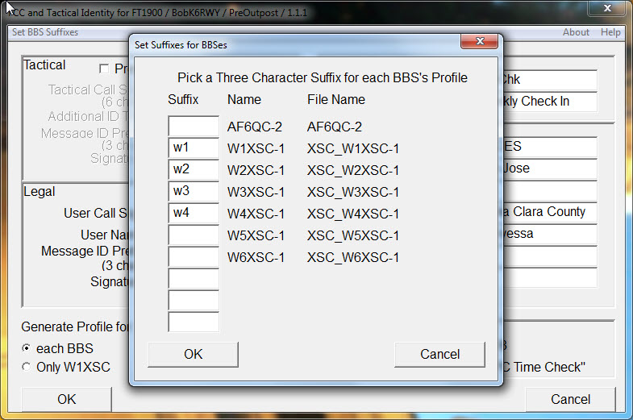

BBS Suffixes
BBS Systems
|  |
| Fig. 8 -- Create unique suffixes for each BBS (Do this once) |
As with all radio systems, packet requres a repeater or bulletin board system (BBS) somewhere nearby to receive and record transmissions from the operator of a packet station. There may be several. Whoever configures Outpost for use in a particular area will create a file to hold the properties of a specific BBS.
PreOutpost will need to know the names of each BBS so that it can create a profile for each BBS before it starts Outpost. If the number and character of the BBSes is static then we need only find their details once. In order to use the profile which is configured for a particular BBS one needs a portion of the profile name to designate the BBS. PreOutpost uses a suffix of the profile name to designate the BBS.
During the creation of a Master Profile or entering the first Identity information the menu item "Set BBS Suffixes" will display all of the Outpost configured BBSes along with any known suffixes. The user can add or delete suffixes in the dialog box and press OK. Those BBSes with a blank (empty) suffix field will be ignored.